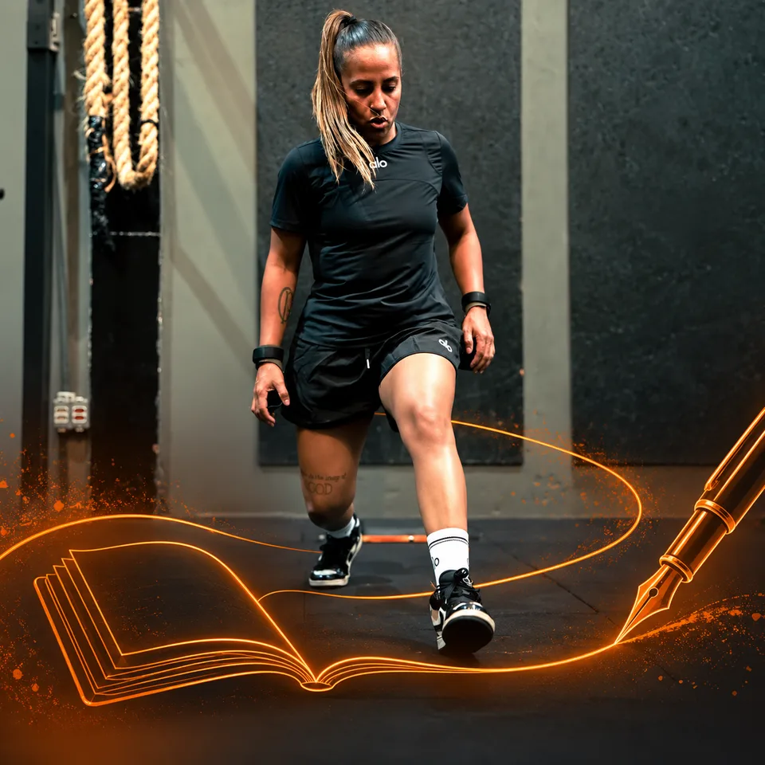
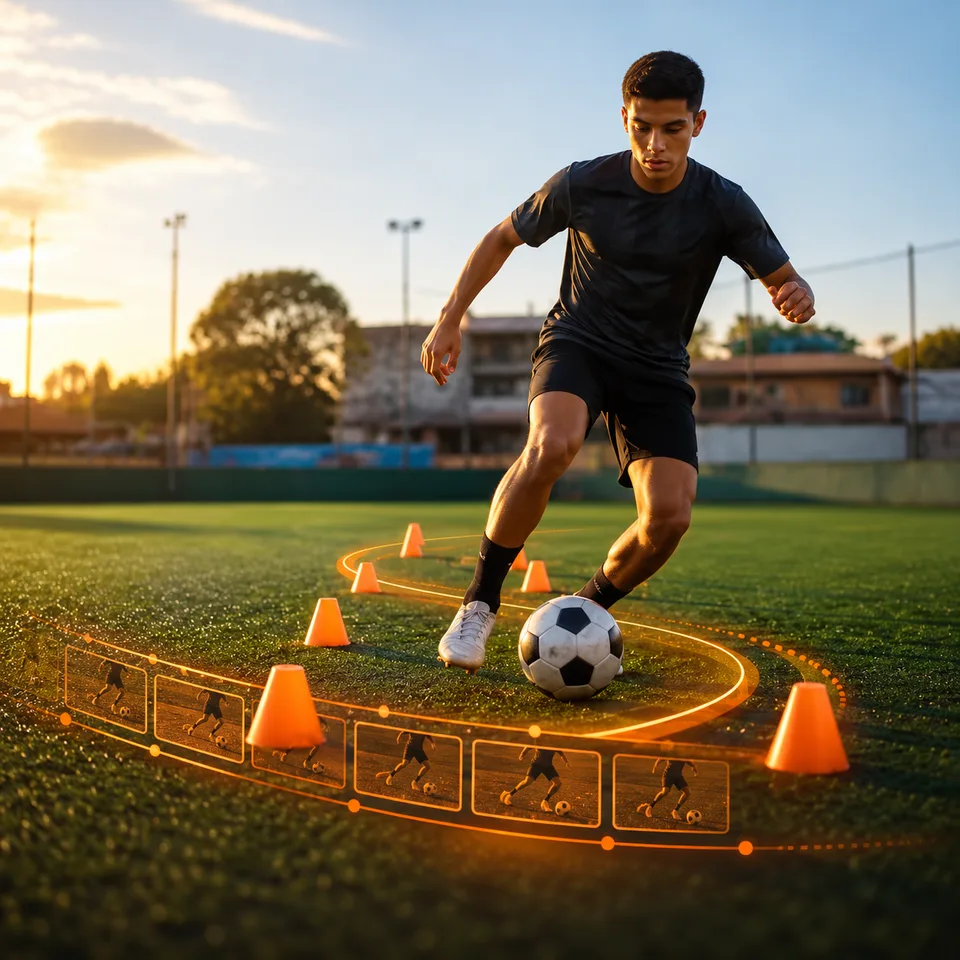
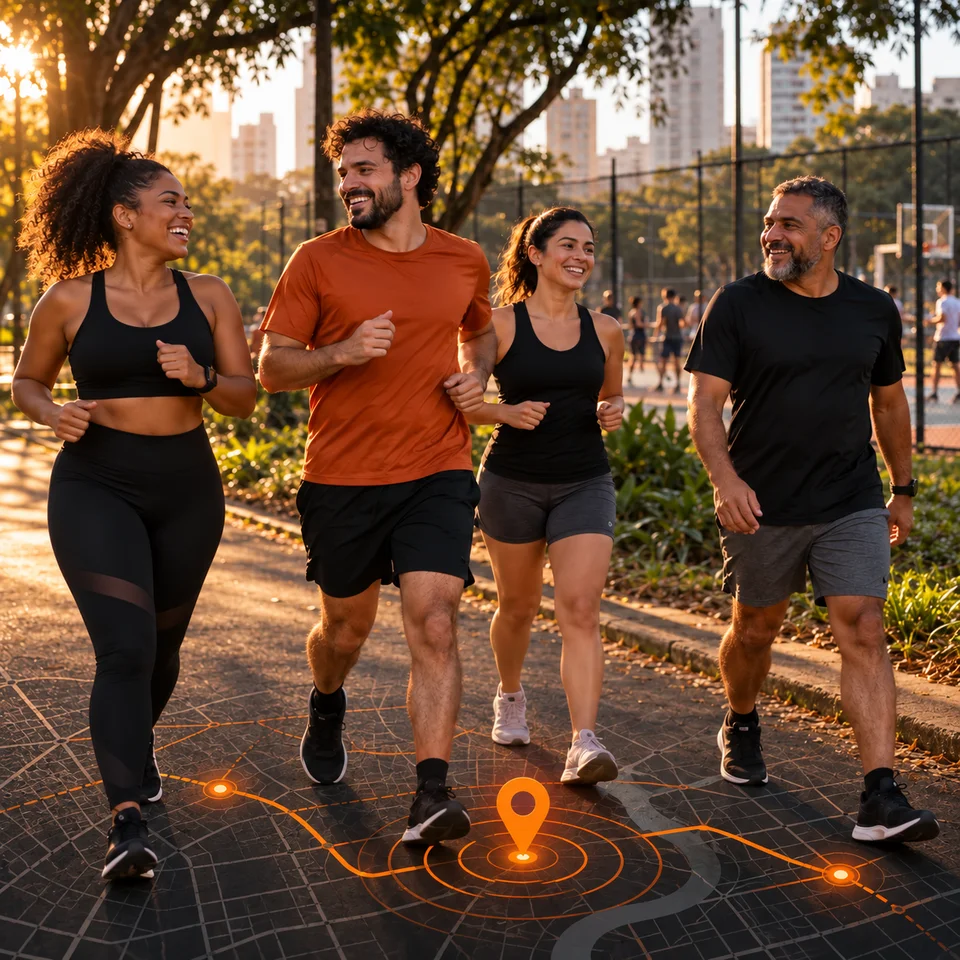
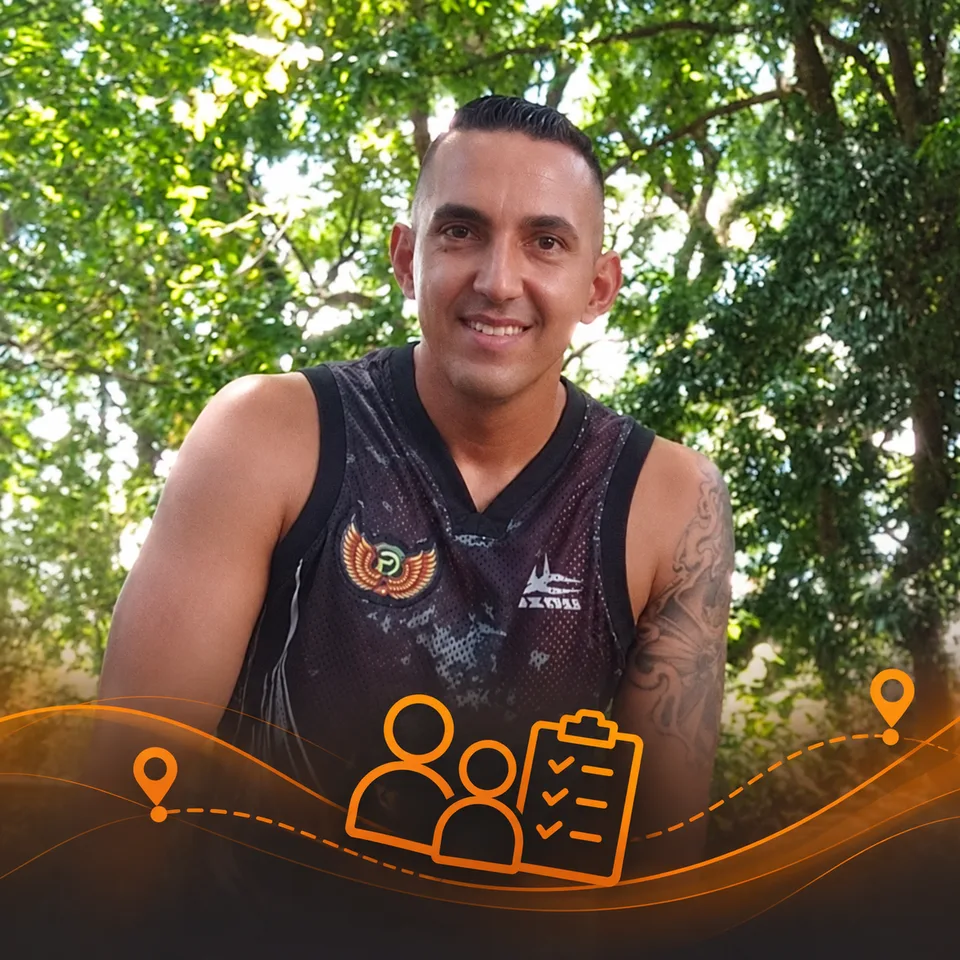
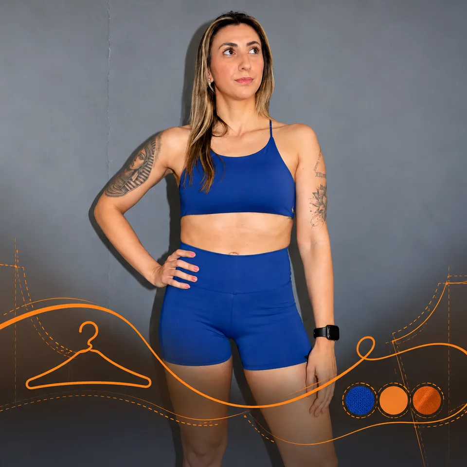
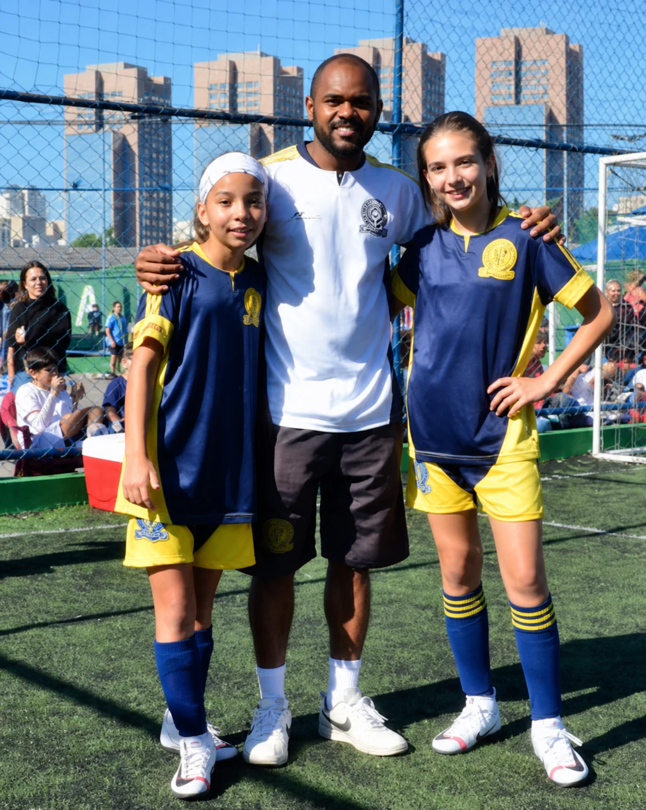
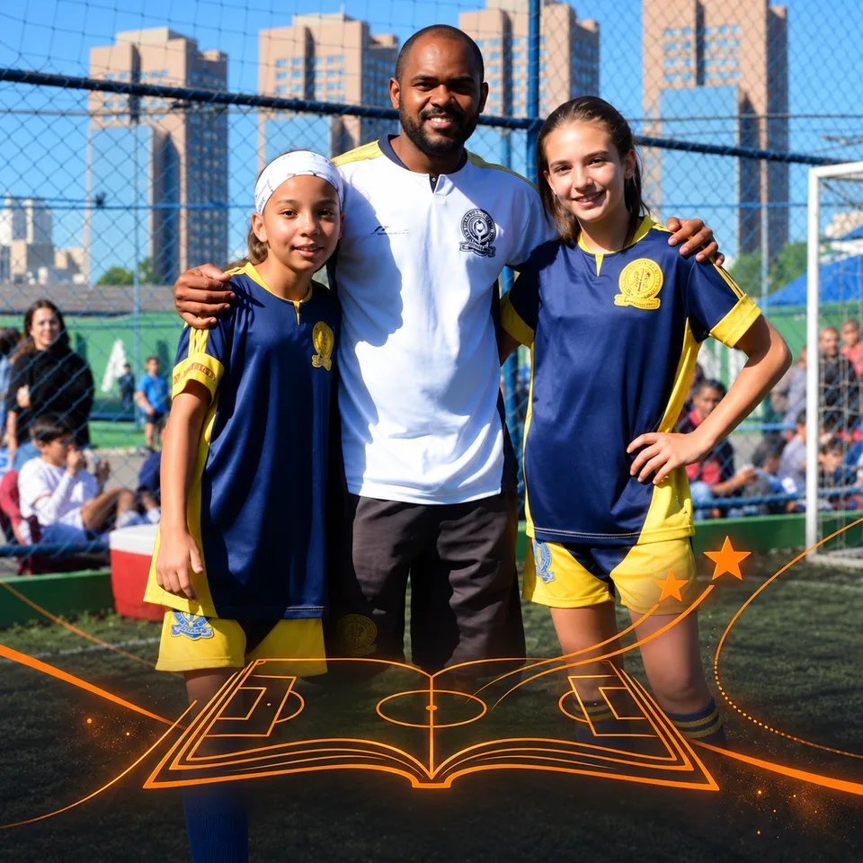

Thais Garcez, uma nova versão
Uma mudança física que se transformou em disciplina, conhecimento e uma nova forma de viver.
Ler reportagemHistórias para inspirar. Conhecimento e apoio para se movimentar.
Uma seleção real da biblioteca, dos serviços e do conteúdo publicado.
A escolha fica neste aparelho. Selecione “Escolher modalidade” para apagá-la. ConhecimentoMinha primeira corridaUma trilha em quatro passos para organizar o começo da prática.Abrir trilha →
ConhecimentoMinha primeira corridaUma trilha em quatro passos para organizar o começo da prática.Abrir trilha →
 BEplayResultado não acontece por acasoTreino de agilidade no futebol, disciplina e evolução.Assistir →
BEplayResultado não acontece por acasoTreino de agilidade no futebol, disciplina e evolução.Assistir →
 FerramentasCalculadora PaceCalcule o seu ritmo por quilômetro como referência educativa.Usar ferramenta →
FerramentasCalculadora PaceCalcule o seu ritmo por quilômetro como referência educativa.Usar ferramenta →
 Radar BE · São PauloOnde praticar esporte em São PauloCentros esportivos, CEUs e caminhos para se movimentar perto de você.Encontrar oportunidades →
Radar BE · São PauloOnde praticar esporte em São PauloCentros esportivos, CEUs e caminhos para se movimentar perto de você.Encontrar oportunidades →
 ProfissionaisBruno Rezende — Personal TrainerTreinamento funcional, condicionamento e performance.Ver profissional →
ProfissionaisBruno Rezende — Personal TrainerTreinamento funcional, condicionamento e performance.Ver profissional →
 Meu Caminho BeRegistrar uma atividadeGuarde o treino, jogo, caminhada ou movimento que viveu hoje.Registrar agora →
Meu Caminho BeRegistrar uma atividadeGuarde o treino, jogo, caminhada ou movimento que viveu hoje.Registrar agora →
 ReportagensThais Garcez, uma nova versãoDisciplina, conhecimento e uma nova forma de viver a musculação.Ler reportagem →
ReportagensThais Garcez, uma nova versãoDisciplina, conhecimento e uma nova forma de viver a musculação.Ler reportagem →
Sem IA generativa. As respostas vêm da nossa biblioteca editorial e do conteúdo publicado.
 ReportagensBem Esportivo
ReportagensBem Esportivo

7 min de leituraUma mudança física que se transformou em disciplina, conhecimento e uma nova forma de viver.
Ler reportagem
Vídeo · 0:28Disciplina, persistência e constância. Uma evolução construída um treino de cada vez.
Assistir no BePlayIdeias, vivências e perguntas que vão além do resultado. Por Válter Igor.
Ler a opinião
São PauloEncontre centros esportivos, CEUs e atividades para começar em São Paulo.
Explorar o Radar BEUma trilha em quatro passos para organizar o começo da prática.
Explorar conhecimento
Encontre apoioConheça Bruno Rezende e outros profissionais para apoiar sua prática esportiva.
Encontrar profissionaisRegistre o que viveu, reconheça seu ritmo e encontre uma forma mais leve de permanecer em movimento.
Registrar minha atividade
Ateliê BEForma, presença e estilo. Conheça os looks da B Malzone Store no Ateliê BE.
Explorar o catálogo
ReportagensBem Esportivo
Arquivo · 4 min de leituraOs primeiros passos de Duda e Lara no futebol, entre amizade, formação e sonhos em movimento.
Ler reportagemReferências simples para compreender melhor a sua rotina esportiva.